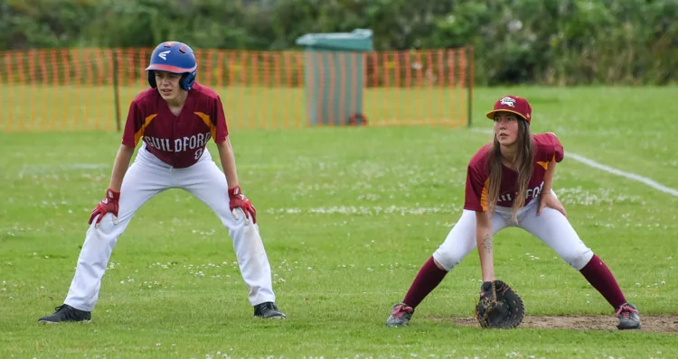
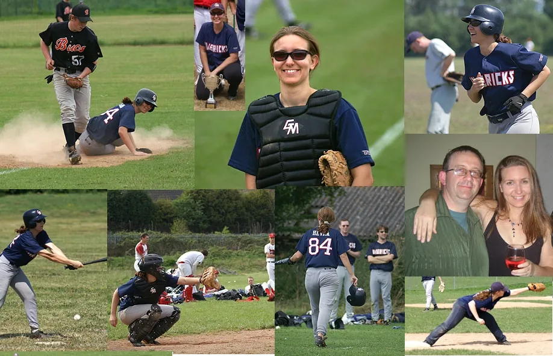
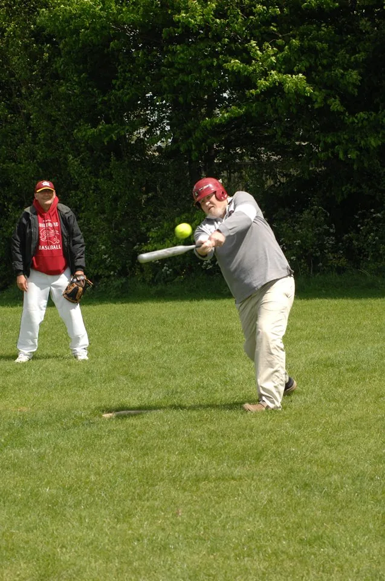

Some
highlights.
Six seasons that shaped the club. Each one links to its full write-up.
1992
Formed from a merger with the Wokingham Millers. First game in April, at Waltham Abbey. It rained. They lost.
Read 1992
2011
Cardinal and gold replace navy, white and red. The first team goes 16–4.
Read 20112015
A National Play-off Final, reached with a ninth-inning walk-off in the semi.
Read 20152017
Three teams for the first time. Sixteen debuts in one season, a club record.
Read 2017
2021
The Gold Cats take the field: fifteen players, every one from the junior programme.
Read 2021
2025
Runners-up, and the only team to split a series with the Kent Bucs.
Read 2025Every season since 2007 is written up below.
All seasonsThe record books.
Results, standings and highlights for every season on record. Earlier years are thin because the club's early archive is.
- 2025Runners-up in the regular season. Semi-final exit to Cardiff Merlins.Mavericks: runners-up, semi-final. Millers: BBF Division 5.Read
- 2024The Millers reach the play-offs for the first time.Mavericks: 13–15. Millers: play-offs.Read
- 2023The first season at Kings College. Millers go 22–7; three teams competing.Mavericks: winning record. Millers: 22–7, 2nd in pool.Read
- 2022Mavericks go 18–7. Lewis Bawden throws a no-hitter against Richmond.Mavericks: 18–7 (AA). Millers: development year.Read
- 2021The return to play. The Gold Cats are made up entirely of junior graduates.All three teams back after COVID.Read
- 2020Shortened to five weeks by COVID. Just getting everyone playing.Millers: 5–5. August and September only.Read
- 2019Full game-by-game results on record.Mavericks: 9–11 (AA). Millers: 7–15 (Single-A).Read
- 2018Both teams reach the play-offs. Yasu Minowa wins MVP for the second year running.Mavericks: 8–14, play-offs. Millers: play-offs.Read
- 2017Three teams for the first time. The Millers reach the National Final.Millers: National Final. Gold Cats: first season.Read
- 2016The 25th anniversary. The Millers are founded and reach the play-offs in year one.Mavericks: winning record (AA). Millers: play-offs.Read
- 201510–4, a walk-off semi, unbeaten London toppled, National Final runners-up.Mavericks: 10–4, National Final.Read
- 2014A move to Christ's College. Heather Armstead enters the Hall of Fame.Mavericks: single team (AA), play-offs.Read
- 2013Winning records for both teams, despite losing their home diamond.Mavericks I: semi-final. Mavericks II: winning record.Read
- 2012Mavericks I go unbeaten in the regular season, only the second time in club history.Mavericks II: 6–4.Read
- 2011Two teams for the first time in a decade, and the new cardinal and gold kit.Mavericks I: 16–4, 1st in Pool B. Mavericks II: 5–8.Read
- 2010The junior programme relaunches as the Broadwater Bobcats.Mavericks: BBF Single-A South.Read
- 2009A 24-player squad in BBF A South.Mavericks: BBF A South.Read
- 2008Full batting stats on record. A team average of .375, led by S. Lin at .688.Mavericks: BBF A South, Division 2.Read
- 2007The earliest season on record online. The Mavericks reach the Final Four.Mavericks: Final Four.Read
- 1992Year one. The Wokingham Millers merge with a Guildford group, and a club is born.Home: Northmead Junior School.Read
The Hall of Fame.

Heather Armstead
Inducted 2014 · #84, retiredCatcher and first base from 2003 to 2014. The club's first inductee, and remembered as one of the best defensive catchers it has ever had.

Richard Williams
Inducted 2016 · FounderCo-founded the club with friends in 1991, helped start the junior programme in 1993 and relaunched it in 2010. He still runs Teeball on Saturday mornings.
Your season next.
The next chapter starts on a Thursday evening at Kings College. Your first session is free.